Contents
clear all
close all
labels=readtable("REFERENCE-v3.csv");
labelTagTable=labels(:,2);
labelCell=table2array(labelTagTable);
labelTag=cell2mat(labelCell);
find normal and af ECG file Names
normalIndexes=[];
afIndexes=[];
for i = 1:length(labelTag)
if labelTag(i) == 'N'
normalIndexes=[normalIndexes i];
elseif labelTag(i) == 'A'
afIndexes=[afIndexes i];
end
end
load af data and pass it to rr-int
sampleRate=300;
AfRPeaks={};
NormalRPeaks={};
NormalRrInterval=[];
AfRrInterval=[];
for j=1:length(afIndexes)
path=strcat("all-data/A0",num2str(afIndexes(j),'%04.f'));
tmp=load(path);
len=length(tmp.val);
RPeak=ExtractRrSingleEcg(tmp.val,sampleRate);
AfRPeaks{j}=RPeak;
AfRrInterval=[AfRrInterval diff(RPeak)];
plot 10 point care plots of af patients
if j<10
RRInterval=diff(RPeak);
figure()
plot(RRInterval(1:end-1),RRInterval(2:end),"x")
xlim([0 1000])
ylim([0 1000])
end
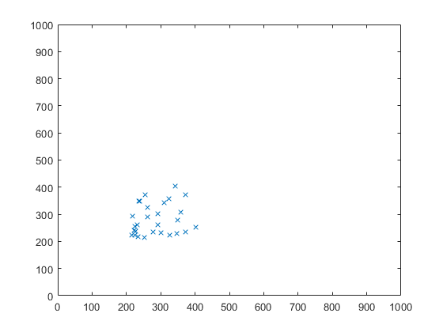 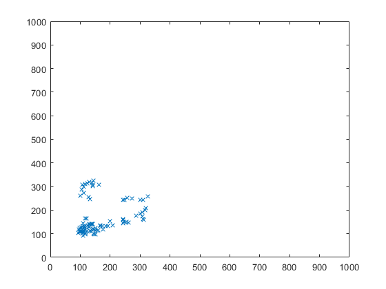 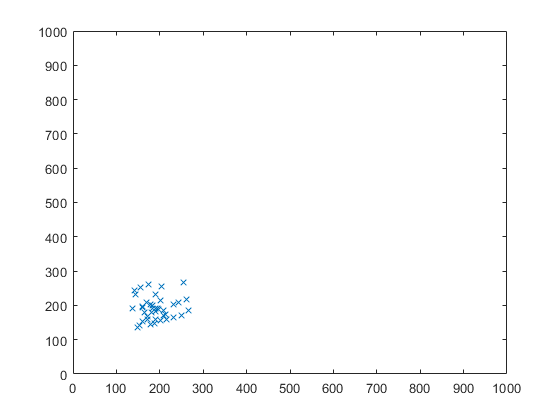 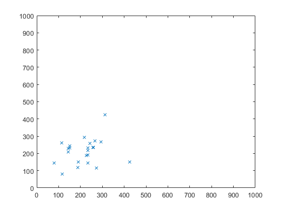 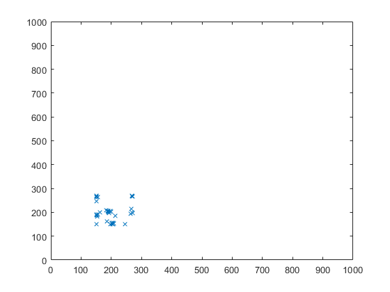 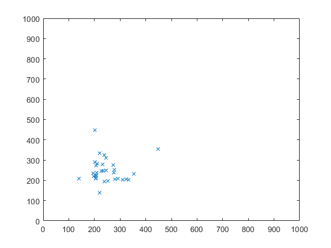 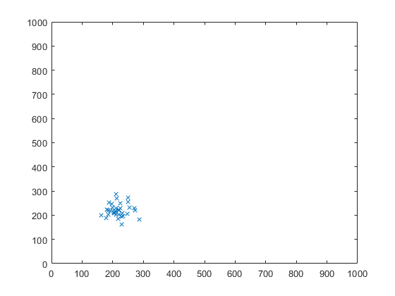 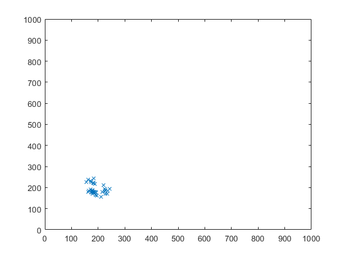 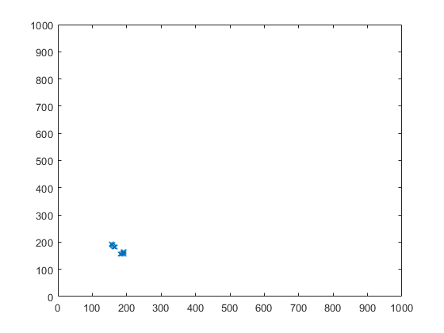
end
load normla data and pass it to rr-int
for k=1:length(normalIndexes)
path=strcat("all-data/A0",num2str(normalIndexes(k),'%04.f'));
tmp=load(path);
len=length(tmp.val);
RPeak=ExtractRrSingleEcg(tmp.val,sampleRate);
NormalRPeaks{k}=RPeak;
NormalRrInterval=[NormalRrInterval diff(RPeak)];
plot 10 point care plots of normal patients
if k<10
RRInterval=diff(RPeak);
figure()
plot(RRInterval(1:end-1),RRInterval(2:end),"x")
xlim([0 1000])
ylim([0 1000])
end
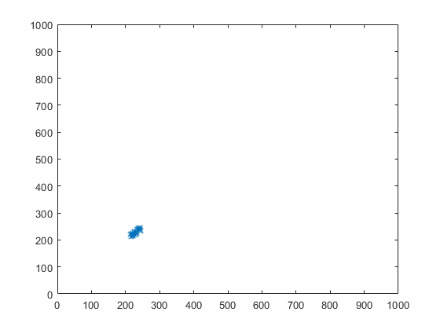 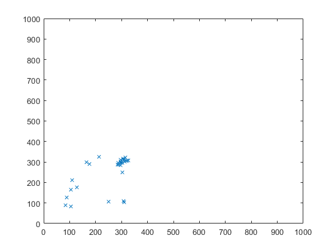 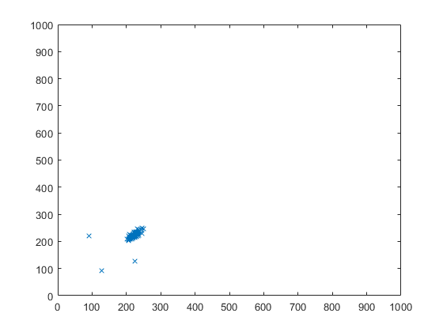 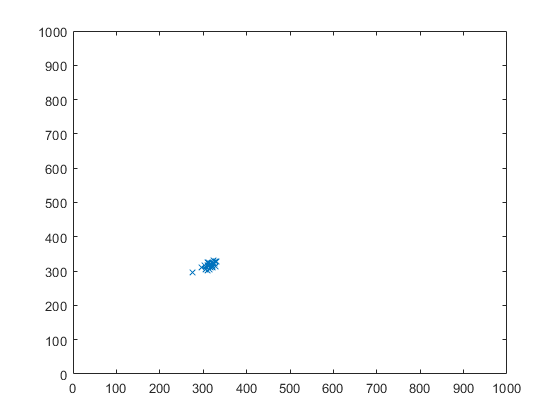 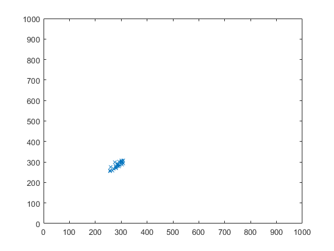 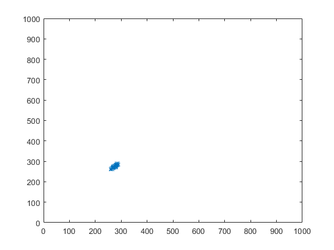 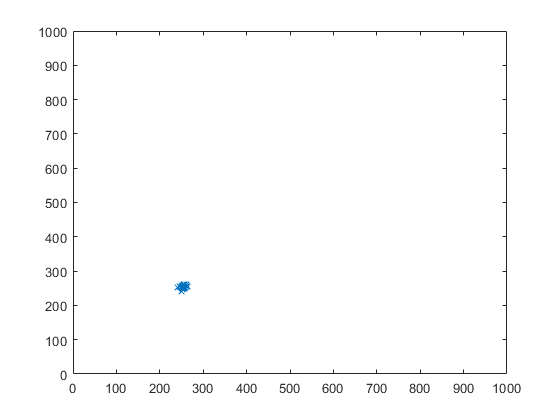 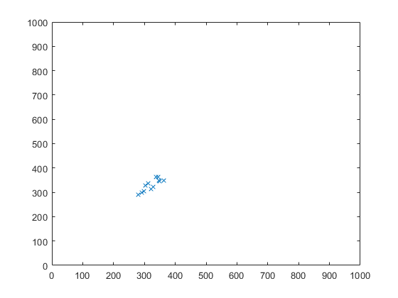
end
show histograms
figure()
histogram(NormalRrInterval)
title('Histogram for RR interval acrross all normal patintes')
xlim([0 1000])
figure()
histogram(AfRrInterval)
title('Histogram for RR interval acrross all AF patintes')
xlim([0 1000])
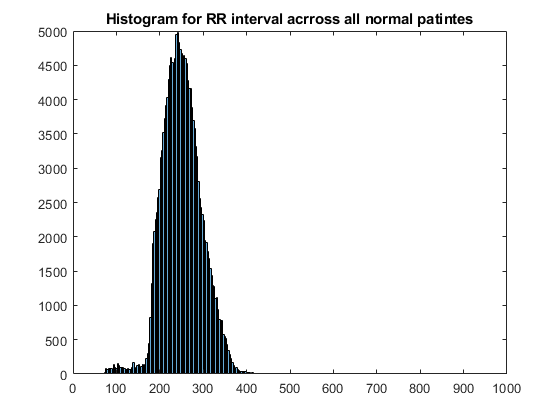 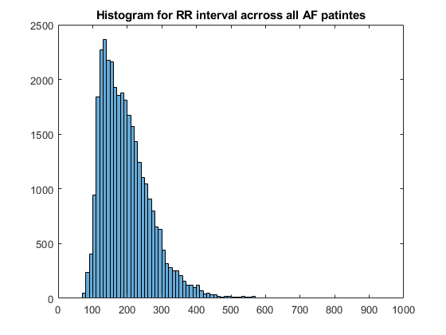
show point care
RrI_normal=NormalRrInterval(2:end);
RrIDelay_normal=NormalRrInterval(1:end-1);
figure()
plot(RrIDelay_normal,RrI_normal,"x");
title("point care for all NORMAL patients")
xlim([0 1000])
ylim([0 1000])
RrI_af=AfRrInterval(2:end);
RrIDelay_af=AfRrInterval(1:end-1);
figure()
plot(RrIDelay_af,RrI_af,"x");
title("point care for all AF patients")
xlim([0 1000])
ylim([0 1000])
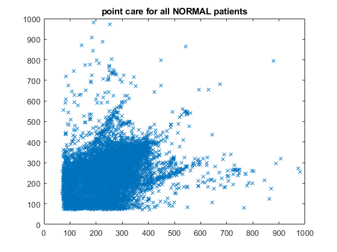 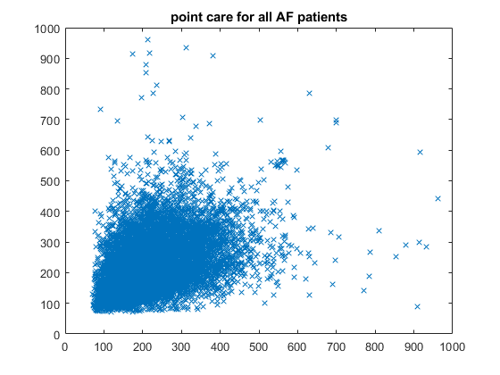